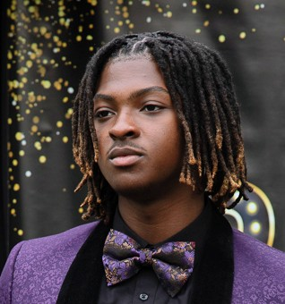

Computer Science Student | Elizabeth City State University
I'm a computer science student interested in software development, data, and building technology that actually solves problems. I've worked with Python, Java, and web tools, and I enjoy learning new skills by jumping into real projects. My background includes leadership through sports, volunteer work, and hands-on coursework in programming and engineering ethics. I'm focused on growing as a developer and preparing for internships.